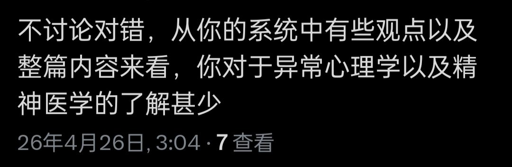

我与文椛的分歧，本质上不是知识层面的分歧——就算我读了十篇关于雌二醇的论文，我仍然不希望她吃药。因为我的“不希望”来自于我对她的欲望、对她身体的感情、对她“变成另一个人”的抗拒。这些都不是知识能改变的。
“缺乏常识”这个指责，是一个错位的战场转移。真正的问题是，我和她对“什么是好的生活”有着不可调和的想象。 我认为好的生活是不吃药、不改造身体、保持某种“自然”状态；她认为好的生活是通过药物和改造成为他想成为的人。这两个想象没有对错，但它们不兼容。
“缺乏常识”是一个温和的说法，因为它暗示“如果你知道了更多，你就会同意我/改变想法”。而真相是残酷的，即使我了解了全部知识，我仍然不会同意她，她也不会同意我。我们的分离不是因为无知，而是因为欲望的方向相反。
这就是精神分析的范畴了。
“缺乏常识”这个指责，是一个错位的战场转移。真正的问题是，我和她对“什么是好的生活”有着不可调和的想象。 我认为好的生活是不吃药、不改造身体、保持某种“自然”状态；她认为好的生活是通过药物和改造成为他想成为的人。这两个想象没有对错，但它们不兼容。
“缺乏常识”是一个温和的说法，因为它暗示“如果你知道了更多，你就会同意我/改变想法”。而真相是残酷的，即使我了解了全部知识，我仍然不会同意她，她也不会同意我。我们的分离不是因为无知，而是因为欲望的方向相反。
这就是精神分析的范畴了。
